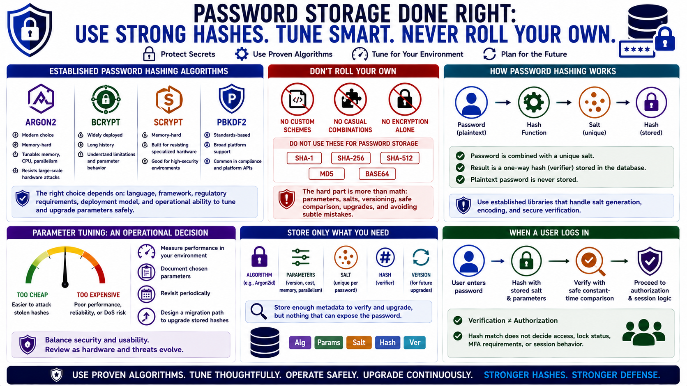

Modern Password Hashing Algorithms
Connecting to LMS... Progress: in progress

Narration
Modern password storage should use established password hashing algorithms and libraries. Argon2, bcrypt, scrypt, and PBKDF2 are common names in this space, each with different properties, history, platform support, and tuning options. The right choice depends on the language, framework, regulatory environment, deployment model, and operational ability to configure and upgrade parameters safely.
Argon2 is widely viewed as a modern choice because it can be tuned for memory cost, CPU cost, and parallelism. Memory hardness matters because it makes large-scale guessing more expensive on specialized hardware. scrypt also emphasizes memory hardness. bcrypt has a long deployment history and is still common, though teams need to understand its limitations and parameter behavior. PBKDF2 remains common in standards-driven environments and some platform APIs.
Algorithm selection should avoid custom cryptography. Developers should not invent password hashing schemes, combine primitives casually, or depend on plain SHA-1, SHA-256, SHA-512, MD5, Base64, or encryption alone for password storage. The hard part is not only the math. It is parameter encoding, salt generation, versioning, safe comparison, upgrade paths, and avoiding subtle mistakes that established libraries already handle.
Parameter tuning is an operational decision. If hashing is too cheap, stolen hashes are easier to attack. If it is too expensive, login, registration, and reset flows may become unreliable or vulnerable to resource exhaustion. Teams should measure performance in their environment, document chosen parameters, revisit them periodically, and design a migration path so stored hashes can be upgraded as standards and hardware change.